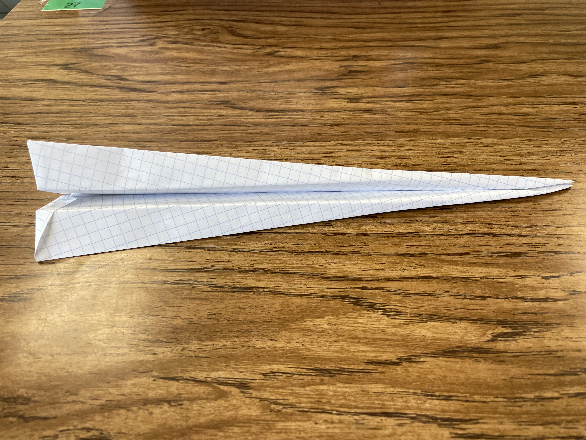
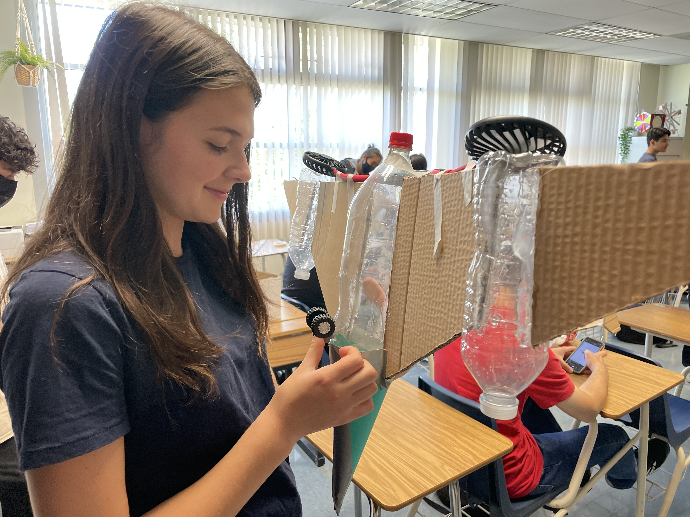
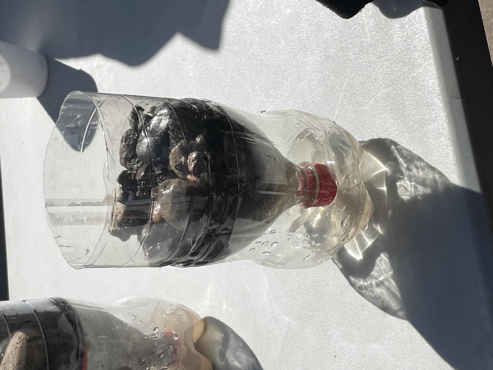

| Weeks |
Description |
Pictures |
Week #2 | Date: 09/02/2022< |
- I learned about the different professions of engineering. There are people that design the products with dimensions and measurements and people who actually
make or manufacture the project.
- I did a safety quiz about callouts, how to handle most tools, and what to wear when in the lab. The main points are that there should be no loose clothing
or hair and you should wear safety equipment at all times while in the lab. You should also listen and follow callouts.
- After, I designed my own laptop on TinkerCad for the challenge and it turned out pretty good.
|
 |
Week #3 | Date: 09/09/2022 |
- I designed and edited a Rube Goldberg machine on Tinkercad.
- I measured and designed an E on a sheet of paper. I measured and cut out my partner's E on a blank sheet of paper.
I learned that it's hard to draw straight lines without graphed paper.
I also learned that using the right units is really important.
This project was mainly a review of how to use a ruler and the importance of materials.
|
 |
Week #4 | Date: 09/16/2022 |
- My group started building our Rube Goldberg machine with cardboard. We haven't fully finished it yet, but we're close.
We've done the ramp and pillars for the pulley. We also have the toy car ready and toilet paper for the pulley ready.
- The challenge for this week was designing a boat out of a single piece of paper. Everyone built actual boats with origami,
but I suck at origami. Because of this, I wanted to test how a sheet of paper would do if it was unfolded. This would give it
more surface area for it to float, and if weight was distributed evenly, then it could theoretically float. This turned out to be
the solution, and my piece of paper failed only because the weight wasn't distributed evenly.
|
 |
Week #5 Date: 09/23/2022 |
My group worked on building the Rube Goldberg machine all week. We improved our design by making it to be able to be started without
holding the baseball. We created practically a drawbridge for the baseball. We attached a string that went to the top of the pillars
to a flattened toilet paper roll. The design worked really well and made our machine consistent. We tested the machine and popped
the baloon first try. After that I just helped other groups with their projects. |
 |
Week #6 Date: 09/30/2022 |
My group disassembled a computer. A guest speaker talked to us about how certain parts of a computer function. He also
talked to us about different laws and important people that went into the design and functionality. of a computer. Once we actually
went into disassembling the computer, we took notes of each part that made up a computer and how they were positioned. For example,
the heat disc and fan are right next to each other to maintain temperature of the whole computer. The size of the screws are important
as well, and have their own functions. The bigger ones were usually used to hold the computer as a whole, whilst the smaller ones were
used for individual, smaller parts. After we did a worksheet labeling each significant part of the computer, we reassembled the computer.
Our group worked well and fast altogether, but we could've managed our screws a bit better. |

 |
Week #7 | Date: 10/07/2022 |
- I learned about bioengineering and how scientists use it to solve problems in the real world. For example, a gecko's claws help
the gecko climb up a tree with pretty fast speed. Scientists at NASA and JPL are designing a robot that has similar features to
the gecko's claw to allow for a rover to climb. There are some setbacks with this, such as gravity. One can also use bioengineering
to make prosthetics to help animals and humans in need.
- I designed an sea otter flipper prosthetic in Tinkercad. It worked similar to a flipper and was designed with rubber as the material
in mind. The overall structure was more similar to an otter's flipper.
- The class made instructions on how to make PBJ's. Everyone failed because the steps weren't specific enough, with examples being
opening the jar or opening the bread bag. I learned that computer instructions have to be really specific in order for it to understand
what it's trying to do. It's following steps, so those steps have to be exact and sometimes overexplained in order for it to perform the function.
- When applying for a Mechanical Engineering job, the average pay is about $90,000. Sometimes, this pay can be the highest or even lowest.
Most jobs require a Bachelor's degree of 1 or 3 years relating to Science and Engineering. Some require an internship in this field of work and participation
in student activities. There's also benefits such as a 401k or Health savings account. There's also different levels of Mechanical Engineering as well,
and that depends on how much education you've received.
|
 |
|
Week #8 | Date: 10/14/2022 |
- I learned about aeronautical and astronautical engineering. I had to design a makeshift airplane involving a 2-liter bottle that will fly horizontally.
My plan is to use cardboard for the plane wings and attack two smaller bottles in between the planes. The two smaller bottles will also have fins
on top of them for more speed and of course looks. If possible, I will try to get fans involved to make it as similar as a real life plane. I designed
this idea on Tinkercad and it looks really cool. I also have to create a BOM of all the materials I will need for this plane.
- I also did another engineering challenge involving paper airplanes. The problem was to throw a paper airplane, designed by me, off a second floor
trash can. I followed this tutorial to learn how to build it. I of course
put my brand Tristan Flights. When tested, it flew pretty far. The actual solution was to build a paper ball, but my paper plane still got
as far as those.
|
 |
|
Week #9 | Date: 10/21/2022 |
My group fully designed the cardboard airplane. We cut out cardboard for the wings according to the dimensions of the design and hot glued them on to
the airplane. I then proceeded to chug two water bottles so we could use them for the airplane. The original plane was to put fans onto them, but the fans
weighed too much once we put them on. We hot glued the wings on the three water bottles, one 2-liter and the other two normal sized, and the airplane
looked really cool. We then added a cone at the top with construction paper for more aerodynamics. The last day, we tested the airplane using built up pressure
in water for launching it. When it was our turn to launch the plane, it just landed on the ground. It didn't work whatsoever. It kind of launched weird and the
pressure did nothing as the pipe wasn't fully in. We proceeded to absolutely break the plane and still decided to relaunch it. It actually launched this time,
with only one wing. It did a lot of spins in the air, but went nowhere really. It was a lot of fun and helped teach me the fundamentals of how rockets and airplanes
work practically, without all the thermodynamic stuff of course.
|
 |
|
Week #10 | Date: 10/28/2022 |
I learned about environmental engineering. To sum, it is engineering to fix the problems in engineering, which is creating pollution and waste
in the air and other places. It can also be used for water filters that are in everyone's toilets. We created a similar experiment to this,
where we had to create a filter of water using big rocks, small rocks, sand, and tissue. In that order, from top to bottom, the water would go
through clean. The rocks filtered out the objects and the sand and tissue took away the dirty parts of the water. After going through this
filter twice, the water turned out looking drinkable.
|
 |
|